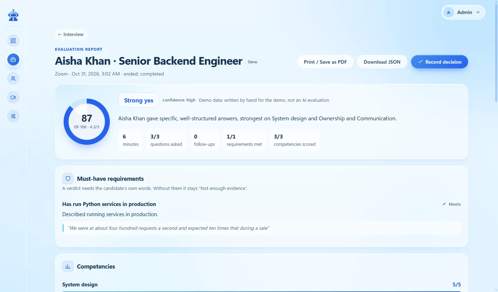
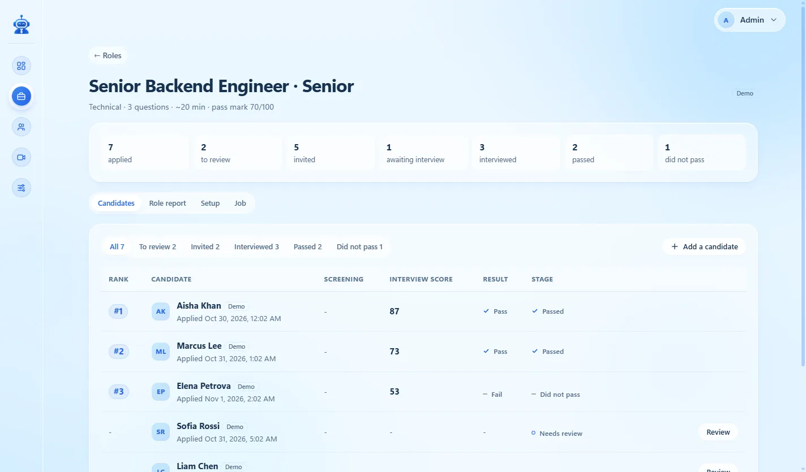

An interview scorecard turns a conversation into ratings you can compare across candidates. An evidence-based scorecard adds one rule: every rating must point at something the candidate actually said. No quote, no score. That single rule is the difference between a scorecard a hiring manager can trust and a confident-sounding summary nobody can check.
The rule matters more once an AI writes the first draft. Language models are fluent summarisers and occasionally fluent inventors. Asked to justify a 5 for "system design," a model may paraphrase what it expected the candidate to say rather than what they said, and the paraphrase reads just as convincingly as the truth.
Fortunately, this is one of the few AI problems you can check mechanically. If every piece of evidence must be a verbatim quote, your code can look for that quote in the transcript and reject it when it isn't there.
In this article, we'll explore what belongs on an evidence-based scorecard, why AI evaluations need verification, how quote-checking works in practice, and how to turn ratings into a fair ranking. Let's get started!
What is an evidence-based interview scorecard?
A scorecard is the scoring half of a structured interview. The questions are fixed in advance, each mapped to a competency, and the scorecard records how the candidate did on each one. Evidence-based means each rating carries its support with it.
A useful one has five parts:
Competencies taken from the interview plan, in plan order, with the plan's names.
A rating scale, typically 1 to 5, with a short description of each level.
Evidence: the candidate's own words that justify the rating.
Must-have requirements, each judged meets, does not meet, or not enough evidence.
A decision recorded by a person, separate from any AI recommendation.
Why do AI interview evaluations need verification?
Because the failure is silent. A model that invents evidence doesn't produce an error; it produces a polished paragraph. Three patterns come up repeatedly when a model scores a transcript:
Paraphrase drift. The "quote" is a cleaner version of what was said, with the hedges removed. "I think we maybe used Kafka" becomes "used Kafka for event streaming."
Expectation filling. The model credits a competency the job description asks for, because a strong candidate would usually have it.
Wrong speaker. The interviewer's question gets attributed to the candidate: "We handle four hundred requests a second" was the prompt, not the answer.
All three look fine in a report. All three can move a candidate above or below the pass mark. And none can be caught by reading the scorecard alone; you'd need the transcript open beside it, which is exactly the review step busy teams skip.
The short answer
Ask the model for verbatim quotes, then verify them in code against what the candidate said. Anything that doesn't match is dropped, and a verdict that loses its only quote is downgraded, not kept.
How does quote-checking work in practice?
The check is simple, which is why it works. Take only the candidate's lines from the transcript, normalise them, and look for each quote inside them.
Recruence
From AI draft to a scorecard you can trust
AI draft
score 1-5quotesverdicts
Code checks
quote in candidate's words?competency in the plan?score clamped 1-5
Report
kept scores"not assessed""not enough evidence"
recruence / blog
Every rule the code can check is checked in code, not left to the prompt.
Here's a simplified version of the check Recruence runs. Real transcripts come from speech recognition, which mishears a word here and there, so longer quotes may match a stretch of speech closely rather than exactly:
def squash(text):
# lower case, punctuation and spacing ignoredreturn" ".join(re.sub(r"[^a-z0-9]+", " ", text.lower()).split())
def said_by_candidate(quote, candidate_text):
wanted, said = squash(quote), squash(candidate_text)
if wanted in said:
return True# 4+ words: accept a stretch of the same length that matches at least 85%return len(wanted.split()) >= 4 and best_window_ratio(wanted, said) >= 0.85
What happens after the check matters as much as the check:
A competency with no surviving quote has no score. It's shown as not assessed, not as weak. Missing evidence isn't evidence of weakness.
A meets or does-not-meet verdict without a quote becomes "not enough evidence". A pass or fail call has to rest on the candidate's words.
Scores are clamped to the scale, and competencies the plan didn't ask about are dropped.
Recruence
An evaluation report with quoted evidence

recruence / blog
A report from Recruence's demo data: each verdict carries the quote it rests on.
How do teams score interviews today?
Most teams sit somewhere on a spectrum from free-text notes to strict rubrics. The table compares the common approaches on the property that matters most here: can someone else check the score?
Approach
Consistency
Checkable later?
Typical weakness
Free-text notes
Low
Only by the note-taker
Memory and impressions
Rubric with ratings
Medium
Partly
Ratings without reasons
AI summary
High
Rarely
Fluent but unverified
Evidence-based scorecard
High
Yes, quote by quote
Needs a good transcript
The research on structured interviews points the same way: consistent questions and consistent scoring predict job performance better than free-form conversations (Sackett et al., 2022). Verification is how you keep that consistency once a model helps with the scoring. Regulation is heading there too; the EU AI Act expects high-risk hiring systems to keep records and support human oversight (Regulation (EU) 2024/1689).
How Recruence builds the scorecard
Recruence applies these rules after every interview. The plan's competencies are scored 1 to 5 with verbatim evidence; must-have requirements get exactly one verdict each; and every quote is checked against what the candidate said in the transcript, which is rebuilt from the call recording so the AI's own follow-ups are included.
The report then adds what code can compute without any AI: key moments that jump to the quoted line in the transcript, and talk time showing the candidate's share of the words per question. The recruiter's decision (advance, hold or reject) is stored apart from the AI recommendation.
Once each candidate has a verified scorecard, ranking is mostly arithmetic, as long as you're explicit about the rules:
Average only the assessed competencies. In Recruence, the 1-5 average is multiplied by 20 to give a score out of 100, so a 4.3 average reads as 86. Missing competencies are excluded and flagged.
Set the pass mark before you look at results. Recruence's default is 70 out of 100. Changing it re-applies pass or fail to everyone; the scores themselves never change.
Break ties with requirements met, then let genuine ties share a rank instead of inventing an order.
List failed or missing evaluations separately. A candidate whose interview couldn't be evaluated shouldn't be ranked last; they should be followed up.
Compare competencies side by side, not just totals: two candidates on 80 can have very different strengths.
Recruence
Candidates ranked against the pass mark

recruence / blog
A role's candidates ranked against the pass mark (demo data).
What to take away about interview scorecards
A scorecard earns trust when anyone can trace each score back to the candidate's own words. That's achievable even with an AI writing the first draft: ask for verbatim quotes, verify them in code, downgrade anything that loses its evidence, and keep the decision with a person.
If you'd like scorecards built that way, Recruence does it after every interview and ranks a role's candidates against your pass mark. The README shows a full report from the demo data.
 Recruence
Recruence